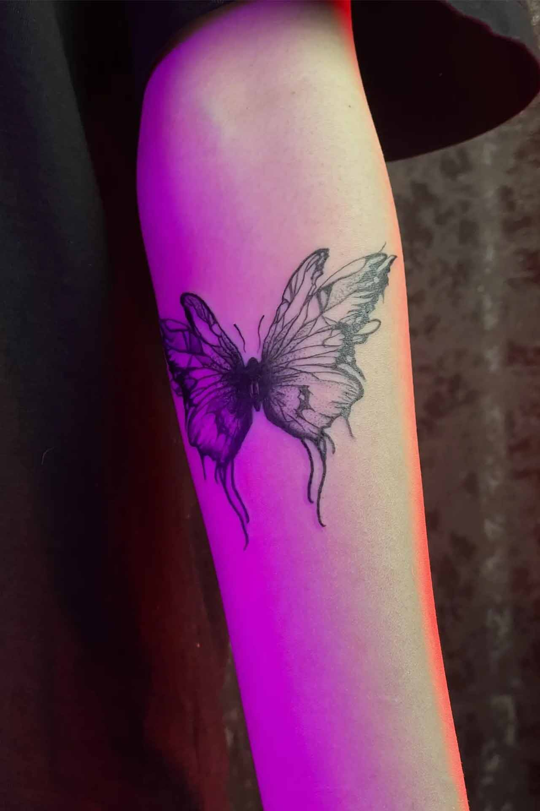
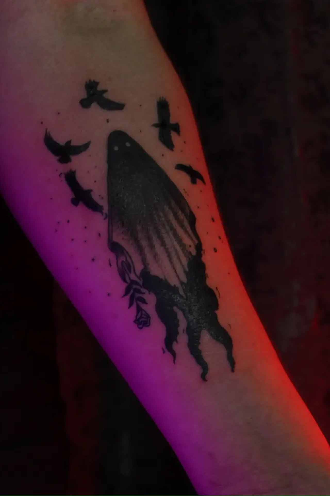
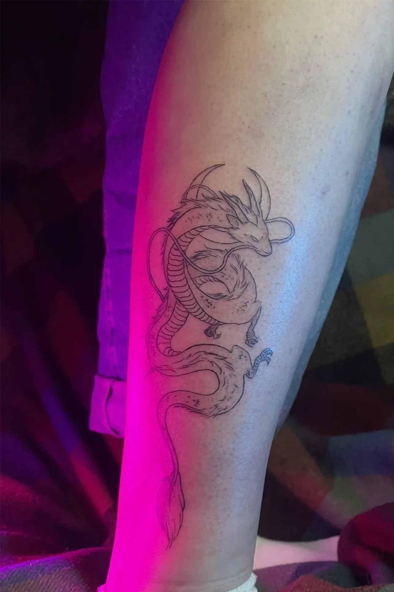

Портфолио работ
Индивидуальный подход к каждой линии и тени. От минималистичной графики до перекрытий и сложных детализированных проектов.


Хотите воплотить свою идею?
Присылайте эскиз, фото понравившихся работ или просто опишите мысль. Обсудим размер, место нанесения и рассчитаем стоимость.
Написать Арсену в Telegram